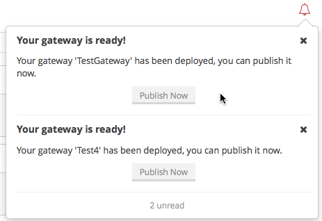
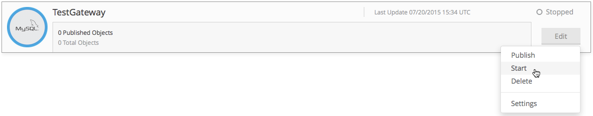

Managing Gateways
Logging In
After you have installed Data Gateway, go to the MuleSoft tab to access Anypoint Data Gateway Designer.

User Roles and Permissions
Data Gateway is part of the Anypoint Platform and consequently supports business groups and environments defined in Anypoint Platform.
Administrator profiles with the proper Data Gateway entitlements can set Data Gateway permissions from the Organization Administration page within Anypoint Platform.
Data Gateway permissions are administrated in their own label within the Permissions tab.
For more information on how to assign permissions for Data Gateway follow the instructions in Managing Accounts Roles and Permissions
Find below a list of the roles along with the permissions each one grants in Data Gateway:
| Defined Role | Permissions in Data Gateway |
|---|---|
Data Gateway Admin |
All (no restrictions) |
Data Gateway Viewer |
User cannot create or edit gateways or connections |
No Role defined |
No access to Data Gateway |
| The Organization Owner role in Anypoint Platform can access Data Gateway, even if no Data Gateway permissions are defined. |
Overview of Anypoint Data Gateway Designer
When you login to Anypoint Data Gateway from your Salesforce account, you are taken to the Anypoint Data Gateway Designer screen. Here you can perform actions such as:
-
View, add or modify gateways
-
Configure connections and VPC
-
View gateway logs
The image below shows the screen with two existing gateways. See the numbers below the image for reference.
| No. | Description |
|---|---|
1 |
List of gateways, in this case showing three gateways: |
2 |
Left-hand menu pane, which allows you to:
|
3 |
Environment selector drop-down menu. Allows you to select which environment to work on (such as Production, Development, etc.), from the environments configured in Anypoint Platform. (For details on environments, user roles and permissions, see above.) |
4 |
Create Gateway button. Click to create a new gateway (for details, see Creating and Configuring a Gateway). |
5 |
Search gateways input box. Type a string to see only gateways whose name contains that string. |
6 |
Support button. Click to contact MuleSoft support (or a contact form if you’re on a trial account). |
7 |
Organization configuration button. Click to configure your organization from within Anypoint Platform. You may be required to log in. |
8 |
Organization/Business Group drop-down menu. Click to select between your available organizations and business groups. Selecting one allows you to access Gateway Designer specifically for that organization or business group. image::suborg-menu-1_2.png[suborg_menu-1.2] |
9 |
Data Gateway menu. Allows you to view and edit your Anypoint Platform profile, or to sign out of Data Gateway. |
10 |
Notifications indicator. Click to see recent notifications, and optionally perform tasks related to them, as shown below.

|
11 |
Gateway status indicator. All the gateways shown here are Stopped, symbolized by an empty circle. A green circle means Started. |
12 |
Gateway Edit menu. Click to edit or discard a gateway. |
Left-Hand Menu
The left-hand menu allows you to perform several tasks, detailed in this section.
Gateways
Displays the screen shown Overview of Anypoint Data Gateway Designer, which allows you to create/edit or operate on gateways.
Connections
Allows you to create new connections, or edit existing connections.
To create a new connection, click Create Connection.
To edit an existing connection, click the connection name. The Update Connection configuration dialog is displayed, allowing you to update the parameters for the desired connection.
To remove an existing connection, hover your mouse over the connection name, then click the remove icon that appears on the left.
Cloud Extender
Allows you to view and delete configurations for Cloud Extender, the agent for data sources that reside behind a firewall.
Each Cloud Extender configuration allows communication between Data Gateway and a data source on a private network. Cloud Extender itself is installed on a machine within the private network. Cloud Extender configurations can only be added during the process of configuring a new data gateway; you cannot add more configurations here. This screen allows you to list or delete existing configurations.
When you delete a Cloud Extender configuration, Data Gateway will cease to accept connections from the relevant Cloud Extender agent. Communication with any data sources within the private network will be lost.
To delete a Cloud Extender configuration, hover your mouse over the right-hand side of the list as shown in the image above, then click the remove icon that appears. Data Gateway will prompt you to acknowledge the request, as shown below.
For details on Cloud Extender, see the Configuring a New Connection on a Private Network in Creating and Configuring a Gateway.
Documentation
Click to go the online documentation main page.
VPC Setup
Here you can select from the available Virtual Private Cloud (VPC) types, as well as define VPC parameters.
Upgrade
Click to go the product main page and change your subscription.
Operating on a Gateway
| This section describes how to work with existing gateways. For information on creating a new gateway, see Creating and Configuring a Gateway. |
Modifying a Gateway’s Status
To modify the status of an existing gateway:
-
Go to the gateway list in Gateway designer by clicking Gateways in the global left-hand menu.
-
In the gateway list, locate the gateway you wish to modify, then click the Edit menu on the right.
 -
Select from the available options: Publish, Start, Delete or Settings. This last option takes you to the Salesforce Settings configuration screen, described below.
Modifying Gateway Settings
To modify a gateway’s settings (such as name and URL), click the gateway’s Edit menu (see above), then select Settings. Alternatively, click the gateway in the gateway list, then click Settings in the left-hand menu. Gateway Designer displays the Settings screen for the gateway, shown below.
When you’re done, click Save.
Policies
You can apply a Throttling policy to your gateway if you wish.
Salesforce
All of your gateways are exposed to Salesforce through a unique external data source, consuming a single Lighting Connect license.
You can access the Salesforce settings menu by clicking the Edit button for a particular gateway, then selecting Publish, or by clicking in the Salesforce item in the left nav bar.

To publish your Data Gateways, do the following:
-
Select the Data Gateways to be published
-
Click Save
|
In previous versions of the Data Gateway, each Gateway was mapped to a Salesforce Connect license. Now, all of your Gateways are channeled through a single external data source, exposed through the OData API shown in this screen. If you enter the settings of any individual gateway – by clicking Edit → Settings – you will see a different URL for the endpoint that exposes it. This endpoint is not being used to sync up with Salesforce, but is still useful for connecting to other OData consumers. |
Working with Objects
You can add, modify or delete objects in a gateway, and also copy objects from one gateway to another.
To perform operations on objects,
To add, modify or delete objects in a gateway:
-
Click the gateway in the list of gateways, or
-
Click the gateway’s Edit menu (see above), then select Create Object, or
-
Click Settings, then click Objects in the left-hand menu
The Objects screen displays objects in the gateway. In the image below, gateway MySQL thru AP contains two objects, gateways and users.
Creating a New Object
To add a new object to a gateway, click Create Object.
Data Gateway displays the New Object screen:
In order to create an object, you need to:
-
Choose the table where the object will reside.
-
Specify a name for the object.
-
Optionally describe the object.
-
Select the fields for the object.
To select a table, you can search through the available tables list or type the full or partial name of a table in the search box. The string you type can be any part of the table, and is case sensitive.
When you select a table, the field selector in the Create an External Object screen becomes populated with the table fields. Search for the desired fields using the search box. Then, select each individual field by clicking it, as shown below. To select all fields, click the empty checkbox by the Name column.
The field that is assigned the primary key (id in the screenshot above) is marked as such by an icon. If the table does not have a primary key, you can assign one manually by hovering your mouse over the desired field, then clicking the key icon that appears next to the key name.
| Tables retrieved from SAP systems may display a Description column for some fields. |
| To toggle viewing only selected fields in a table, click the eye icon to the left of the search box. |
After you have selected the table, object name and fields, click Create Object at bottom right of the screen.
Modifying an Existing Object
To modify an object in a gateway, click the object you wish to modify. Data Gateway displays the object properties screen, which allows you to modify the object.
This is the same screen used when Creating a New Object. The image below displays the configuration window for object users on gateway MySQL thru AP.
Copying an Object Between Gateways
Data Gateway allows you to copy an object from one gateway to another. This feature is specially useful when working with multiple environments that you wish to maintain in a similar state, such as a development and a production environment.
When copying an object, Data Gateway performs checks to ensure that the new object being created in the target gateway is valid. If the object does not exist in the target Gateway, it will be copied even if there are errors. Accessing each object with errors and fixing them is required to enable the copied object. On the other hand, if the object already exists in the target Gateway, and copying it means that the target object will have errors, Data Gateway refuses to perform the copy operation. For example, if the source object belongs to a database table that does not exist in the target gateway, or if there is a mismatch between existing fields, Data Gateway will report the errors, and will not copy the object.
To copy an object, follow these steps:
-
Go to the target gateway, i.e. the gateway that you wish to copy the object(s) to, and access the list of objects for the gateway. (For example, in the list of gateways, click the desired gateway, then click Objects in the left-hand menu).
-
Click the down arrow next to Create Object, then select Copy Objects From…
Data Gateway displays the Copy Objects screen. This screen allows you to select the source gateway and object(s).
-
From the first drop-down menu, select the source environment, i.e. the environment to which your source gateway belongs. When you select a source environment, the source gateway drop-down menu (the second drop-down menu in the screen) loads a list of gateways valid for that environment, or displays a message if there are no valid gateways.
-
Select a source gateway from the second drop-down menu.
-
When you select a source gateway, the list of objects on the left becomes populated with the objects available on the source gateway. The number of fields in each object is displayed to the right. You can hover the mouse over an object to view a list of the fields in that object. Select the object(s) you wish to copy, then click Copy Objects.
If the object(s) you wish to copy already exist in the target gateway, Data Gateway prompts you to overwrite them, or to skip copying the object(s). If the copy operation completes without error, Data Gateway again displays the list of objects.
If the copy operation produces an error, Data Gateway does not copy the object; instead, it displays an error message:
Whenever you encounter an error, you can track the trigger in the logs tab, and filter per error.
Viewing Gateway Logs
To view the logs for a gateway, click the gateway in the list of gateways, then select Logs from the left-hand menu.
As you can see in the image below, the log for the gateway is displayed in a scrollable pane in the browser window. Using this log viewer, you can:
-
Search for log entries using the search box above the log
-
Select to display the last 100 (default), 200 or 500 log entries
-
View entries for all log priorities (the default) or only for specific priorities such as
INFO,ERROR,WARN, etc. -
Download the log as a text file to your local machine
To download the log, use the download button at top right.